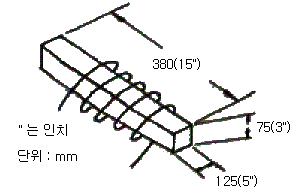
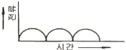
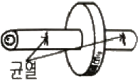

자기비파괴검사기사 (2019-03-03 기출문제)
1과목: 비파괴검사 개론
1. 1cm 직경의 구리 봉을 2cm 직경의 코일로 검사하는 경우의 충전(진)율은?
- 0.25 (25%)
- 0.5 (50%)
- 2.0 (200%)
- 4.0 (400%)
(정답률: 56%)

2. 다음은 와전류탐상시험에서 표피효과의 기준이 되는 침투깊이에 대해 기술한 것이다. 올바른 것은?
- 시험체의 투자율이 낮을수록 침투깊이는 얕다.
- 시험체의 도전율이 높을수록 침투깊이는 깊다.
- 시험주파수가 낮을수록 침투깊이는 얕다.
- 탄소강과 알루미늄 중 탄소강이 침투깊이가 얕다.
(정답률: 37%)
3. X선투과시험과 비교한 γ선투과시험의 장점에 대한 설명으로 틀린 것은?
- 운반하기 쉽고, 협소한 장소에 접근하기 쉽다.
- 동일한 에너지 범위일 경우 X선 장비보다 가격이 저렴하다.
- γ선은 동위원소의 핵에서 방출되는 전자파이므로 외부전원이 필요치 않다.
- 에너지가 높으므로 두꺼운 검사체에 사용할 수 있고, 선명한 투과사진을 얻을 수 있다.
(정답률: 60%)
4. 시험체에 있는 도체에 전류가 흐르도록 한 후, 시험체중의 전위분포를 계측하는 비파괴검사방법은?
- 전기저항법
- 화학분석 검사법
- 방사선투과 검사법
- 음파-초음파 검사법
(정답률: 80%)
5. 자분 분산매가 가져야 할 특성에 대한 설명 중 옳은 것은?
- 휘발성이 크고, 점도가 낮아야 한다.
- 점도가 낮고, 장기간 변질이 없어야 한다.
- 인화점이 낮고, 인체에 유해하지 않아야 한다.
- 적심성이 나쁘며, 결함에서 활발한 화학반응이 일어나야 한다.
(정답률: 70%)
6. 은백색을 띠며 비중이 1.74로 실용금속 중 가장 가볍고 HCP 격자구조를 가지는 금속은?
- Cd
- Cu
- Mg
- Zn
(정답률: 78%)
7. 실루민은 어느 계통의 합금인가?
- Al-Si계 합금
- Fe-Si계 합금
- Cu-Si계 합금
- Ti-Si계 합금
(정답률: 74%)
8. 탄소의 함량이 가장 낮은 것에서 높은 순서로 나열한 것은? (단, 오른쪽으로 갈수록 탄소의 함량이 높다.)
- 전해철＜연강＜주철＜경강
- 전해철＜연강＜경강＜주철
- 연강＜전해철＜경강＜주철
- 연강＜전해철＜주철＜경강
(정답률: 71%)
9. 2원계 상태도에서 포정 반응으로 옳은 것은?
- (액상)→(고상A)+(고상B)
- (액상A)+(액상B)→(고상)
- (고상A)→(고상B)→(고상C)
- (고상A)+(액상)→(고상B)
(정답률: 62%)
10. 다음 중 쾌삭강에서 쾌삭성을 향상시키는 원소와 가장 거리가 먼 것은?
- S
- Se
- Cr
- Pb
(정답률: 58%)
11. 로크웰경도시험의 시험하중에 해당되지 않는 것은?
- 588.4N
- 980.7N
- 1471N
- 1962N
(정답률: 56%)
12. 피로한도에 대한 설명으로 옳은 것은?
- 지름이 크면 피로한도는 커진다.
- 노치가 있는 시험편의 피로한도는 크다.
- 표면이 거친 것이 고운 것보다 피로한도가 작다.
- 산, 알칼리, 물에서 부식된 시험편의 피로한도는 부식 전부다 크다.
(정답률: 55%)
13. Cu-Zn계 상태도에서 α상의 격자구조는?
- 조밀육방격자
- 체심입방격자
- 사방조밀격자
- 면심입방격자
(정답률: 53%)
14. 고강도 알루미늄 합금인 두랄루민의 주요 구성 원소는?
- Al-Cu-Mn-Mg
- Al-Ni-Co-Mg
- Al-Ca-Si-Mg
- Al-Zn-Si-Mg
(정답률: 73%)
15. 비금속 개재물 검사 분류 항목 중 그룹 B에 해당하는 것은?
- 황화물 종류
- 규산염 종류
- 단일 구형 종류
- 알루민산염 종류
(정답률: 53%)
16. 아크 용접에서 용접입열 30000J/cm, 용접전압이 40V, 용접전류 125A일 때 용접속도는 몇 cm/min인가?
- 10
- 20
- 30
- 40
(정답률: 52%)
17. 피복 아크 용접시 발생되는 보호 가스의 성분 중 가장 많이 발생하는 가스는?
- CO
- CO2
- H2
- H2O
(정답률: 59%)
18. 탄소강의 피복 아크 용접에서 기공 발생의 원인이 아닌 것은?
- 용접 분위기 내 수소의 과잉
- 충분히 건조한 저수소계의 용접봉 사용
- 모재에 유황 함유량 과대와 용접부의 급랭
- 과대 전류를 사용하고 용접속도가 빠를 때
(정답률: 77%)
19. 다음 중 연납 땜과 경납 땜을 구분하는 온도는?
- 350℃
- 400℃
- 450℃
- 500℃
(정답률: 64%)
20. 일반적인 플럭스 코어드 아크 용접의 특징으로 옳은 것은?
- 비드 외관이 거칠다.
- 양호한 용착금속을 얻을 수 있다.
- 아크가 불안정하고 스패터가 많다.
- 용제에 탈산제, 아크 안정제 등이 포함되어 있지 않다.
(정답률: 57%)
2과목: 자기탐상검사 원리
21. 저항, 자기유도 및 콘덴서의 조화된 효과에 의한 전류의 흐름을 방해하는 것을 무엇이라 하는가?
- 유도저항(Inductive Reactance)
- 임피던스(Impedance)
- 자기저항(Reluctance)
- 자연붕괴(Decay)
(정답률: 71%)
22. 극간법 자분탐상시험의 설명으로 옳은 것은?
- 양자극을 연결하는 전기력선에 수직방향이 자속방향이다.
- 자극 가까운 부분이 가장 결함을 검출하기 쉽다.
- 자극사이를 멀리할수록 결함 검출이 쉽다.
- 양자극을 연결하는 전기력선에 직교하는 결함이 가장 잘 검출된다.
(정답률: 68%)
23. 자분탐상검사로 표면 아래에 위치한 결함을 검출하기 위한 가장 효과적인 방법은?
- 건식자분, 잔류법으로 측정한다.
- 습식자분, 연속법으로 측정한다.
- 습식자분, 잔류법으로 측정한다.
- 건식자분, 연속법으로 측정한다.
(정답률: 45%)
24. 프로드법에서 전극에 구리로 된 그물망을 씌우는 가장 큰 이유는?
- 전류가 잘 통하도록 도와준다.
- 접촉면을 넓게 하고 스파크에 의한 제품의 손상을 줄이기 위함이다.
- 전극부위의 자속밀도를 높이기 위함이다.
- 시험체에 골고루 자계를 유도하기 위함이다.
(정답률: 77%)
25. 자외선조사등에 대한 설명으로 틀린 것은?
- 필터는 주로 330~290nm의 파장을 가진 자외선이 방사되도록 설계되어 있다.
- 필터 면에서 38cm 떨어진 위치에서 적어도 800μW/cm2 이상의 자외선강도이어야 한다.
- 자외선조사등은 전류조정변압기, 수은등과 필터로 구성되고, 고압 수은등을 사용하면 수은증기 중의 아크방전을 이용하므로 가열없이도 제 강도의 빛을 낸다.
- 수은등을 사용 중에 끄게 되면 곧 스위치를 넣어도 수은등이 냉각될 때까지는 점등되지 않으며, 점등되기 까지는 시간이 걸린다.
(정답률: 51%)
26. 전류에 의한 자계의 강도와 방향에 대한 설명 중 틀린 것은?
- 유한길이를 갖는 코일축 상의 자계의 강도분포는 코일의 중심에서 가장 크다.
- 전류가 흐르는 도체 주변의 자계의 방향은 오른 나사 법칙을 따른다.
- 전류가 흐르는 도체 주변의 자계의 크기는 전류에 정비례한다.
- 전류가 흐르는 원주 도체에서 자계의 강도는 중심에서 가장 크다.
(정답률: 50%)
27. 그림의 직육면체 시험체에서 자화에 필요한 전류[A]값은 약 얼마인가? (단, 코일 감은 수는 5회이다.)

- 1000
- 2000
- 3500
- 4500
(정답률: 59%)
28. 자분탐상시험의 자력선에 대한 설명으로 틀린 것은?
- 자력선은 항상 서로 교차한다.
- N극에서 나와서 S극으로 흐른다.
- 자력선의 밀도가 큰 곳은 자계가 세다.
- 자력선의 밀도는 그 점에서의 자계 세기를 나타낸다.
(정답률: 71%)
29. 코일법으로 여러 개의 시험체를 동시에 검사할 경우 고려해야 할 사항으로 가장 부적합한 것은?
- 반자계는 시험체 1개의 경우와는 달라서 시험체 서로에 영향을 준다.
- 잔류법인 경우는 자기펜자국이 생기지 않도록 주의해야 한다.
- 코일 내 자계강도는 그 분포가 중심부분에는 균일하므로 시험체를 배치함에 있어 둥글게 놓아야 한다.
- 코일의 지름이 코일의 길이에 비해 커지면 코일 반지름 상의 자계강도는 코일 내벽이 제일 강하고 중심에 가까울수록 약해진다.
(정답률: 68%)
30. 자분의 흡착 성능과 관계 없는 인자는?
- 자분의 입도
- 자분의 자기적 성질
- 투자율
- 화학적 불활성
(정답률: 69%)
31. 강자성체의 자기이력곡선에서 곡선의 기울기가 나타내는 것은?
- 보자력
- 투자율
- 자계의 강도
- 자속
(정답률: 58%)
32. 부품을 자화시키는 동안에 자분을 적용하는 자분탐상시험법은?
- 연속법
- 습식법
- 건식법
- 잔류법
(정답률: 76%)
33. 자분탐상시험을 선정하는데 있어 우선적으로 고려해야 할 것은?
- 자속밀도
- 전류의 형태
- 시험품의 크기
- 예상되는 결함과 자장의 변화
(정답률: 62%)
34. 일반적으로 자분탐상시험에서 표면하 결함을 검출하기 위해서 교류 대신 직류를 사용하는 가장 주된 이유는?
- 시험면의 손상을 방지하기 위하여
- 직류는 교류보다 자분의 자기포화점이 높기 때문에
- 교류는 표피효과에 의해 검출깊이의 한계를 갖고 있기 때문에
- 교류보다 직류를 사용하는 것이 전원 공급이 편리하기 때문에
(정답률: 75%)
35. 형광 습식 자분탐상검사를 할 때 안전관리에 관한 사항으로 틀린 설명은?
- 자외선등은 필터를 부착하고, 직접 눈이나 피부에 장시간 조사치 않는다.
- 가연성 검사액을 사용 시는 주위를 환기시키고, 화기에 주의한다.
- 암순응시간 내에 자분모양을 관찰하면 약시가 될 수 있기 때문에 필히 5분 후에 관찰하여야 한다.
- 탐상장치의 전기적 누전 상태를 확인하고, 이상 부분은 수리 후 사용한다.
(정답률: 77%)
36. 소형 부품을 자분탐상시험한 후 탈자가 요구될 때 탈자방법으로 가장 적당한 것은?
- 소형 부품 여러 개를 철제용기에 넣어 코일을 통과시켜 탈자 한다.
- 소형 부품을 플라스틱 용기에 넣어 코일을 통과시켜 탈자 한다.
- 소형 부품을 하나씩 코일에 통과시켜 탈자한다.
- 소형 부품을 조립한 후 코일에 통과시켜 탈자 한다.
(정답률: 63%)
37. 투자율이 기준이 되는 것은?
- 진공에서의 투자율
- 비자성체의 투자율
- 은(Ag)의 투자율
- 일반 공기 중의 투자율
(정답률: 67%)
38. 자분탐상검사에 있어서 결함 검출 감도에 영향을 미치는 인자가 아닌 것은?
- 시험체의 표면상태
- 시험체의 자기특성
- 시험체의 밀도
- 결함과 자화방향이 이루는 각도
(정답률: 70%)
39. 그림이 의미하는 전류 파형은?

- 단상반파정류
- 단상전파정류
- 삼상전파정류
- 직류
(정답률: 57%)
40. 비형광자분을 적용할 때 흰색 페인트를 사용하는데, 이에 대한 설명으로 옳은 것은?
- 두껍게 칠하면 결함 검출능력이 좋아진다.
- 미세한 결함의 검출을 위해서는 칠하지 않는 것이 좋다.
- 명암도(Contrast)를 나쁘게 한다.
- 전도성 페인트이므로 통전에는 문제가 없다
(정답률: 56%)
3과목: 자기탐상검사 시험
41. 대형 구조물의 맞대기 용접부를 교류 극간법으로 자분탐상하는 경우 가장 주의해야 할 사항은?
- 반자계의 영향
- 시험부의 넓이
- 탐상 피치
- 용접선에 대한 자극의 배치
(정답률: 63%)
42. 방향이 다른 두 자장이 시험품에 유도되었을 때, 두 자장의 강도와 방향은 어떻게 변하는가?
- 더 강해진다.
- Vector의 합으로 표시된다.
- 비대칭 원형자장이 된다.
- 대칭 원형자장이 된다.
(정답률: 61%)
43. 제작이 막 완료된 대형 용접구조물에 대하여 자분탐상 검사를 했을 때 다음 중 검출되지 않는 결함은?
- 고온 균열
- 냉간 균열
- 피로 균열
- 크레이터 균열
(정답률: 75%)
44. 전처리를 할 때 분필가루나 운모가루를 뿌린 후 깨끗한 천으로 닦아 내는 것은 어떤 오염물을 제거하기 위한 것인가?
- 녹
- 기름막
- 도금막
- 얇은 페인트막
(정답률: 76%)
45. 자분탐상 시 습식연속법에서 자화전류의 통전은?
- 일반적으로 0.25~1초가 적당하다.
- 3회 이상 충격전류를 주어야 한다.
- 통전시간 동안 자분액은 멈추어서는 안된다.
- 자분액이 멈출 때까지 연속하여 통전을 하여야 한다.
(정답률: 66%)
46. 원통의 내면을 자화하기에 가장 좋은 자분탐상검사법은?
- 극간법
- Prod법
- 축통전법
- 전류관통법
(정답률: 55%)
47. 연속법과 전류법 모두에 사용할 수 있는 자화전류는?
- 직류, 교류
- 교류, 충격전류
- 교류, 맥류
- 직류, 맥류
(정답률: 69%)
48. 직류 연속법으로 자분탐상검사를 수행하여 지시를 찾아냈을 때, 지시가 표면 또는 표면하 불연속인지의 여부를 판명하기 위한 가장 적절한 방법은?
- 교류로 재검사한다.
- 자분을 다시 적용한다.
- 잔류법으로 재검사한다.
- 높은 전류로 재검사한다.
(정답률: 74%)
49. 육안 관찰 접근이 어렵고, 기계가공품질이나 물리적 치수 등 표면조건을 확인할 수 있는 시험법은?
- 자화 고무법(Magnetic Rubber Test)
- 자분탐상시험(Magnetic Particle Test)
- 자화프린트 시험(Magnetic Printing Test)
- 자기 페인트 시험(Magnetic Painting Test)
(정답률: 67%)
50. 자분탐상시험에 작용하는 자분에 대한 설명으로 옳은 것은?
- 자분은 투자율이 낮을수록 좋다.
- 자분의 입도는 결함크기와 상관없이 작을수록 좋다.
- 자분은 침강속도가 빠를수록 좋다.
- 자분은 보자력이 작을 것일수록 좋다.
(정답률: 65%)
51. 다음 결함 중 가공품이 아닌 제조 과정에 발생한 결함과 가장 관계가 깊은 것은?
- 크리프균열
- 피로균열
- 냉간균열
- 응력부식균열
(정답률: 62%)
52. 습식 형광 자분모양을 관찰 시 결함 검출능력이 증가하는 경우는?
- 시험체 표면의 자외선 강도가 높을수록
- 시험체 표면의 가시광선 조도가 높을수록
- 눈에 자외선 강도가 많이 들어올수록
- 눈에 가시광선이 많이 들어올수록
(정답률: 77%)
53. 대형 시험체의 부분검사법으로 용이한 자분탐상검사의 자화장치는?
- 축통전 및 직각 통전장치
- 프로드 및 요크 장치
- 자속 관통 및 전류광통 장치
- 코일 및 회전자계 장치
(정답률: 80%)
54. 길이 5m, 직경이 100mm인 환봉을 원주방향으로 자화시켜 축방향의 결함을 가장 효과적으로 검사하는 방법은?
- 코일법
- 자속관통법
- 극간(yoke)법
- 축통전법
(정답률: 52%)
55. 자분탐상검사시 그림과 같은 불연속이 시험체에 나타났을 때 다음 중 가장 적합한 검출 방법은?

- coil 속에 시험체를 놓는다.
- shaft의 구멍으로 중심 도체를 넣어 전류를 통한다.
- 도체로 된 시험체에 직접 전류를 통한다.
- 접촉판에 둥근 원판을 끼우고 자화하며 검사한다.
(정답률: 65%)
56. 코일법으로 자분탐상검사를 수행하는 경우 반자계에 대한 영향을 약하게 하기 위한 방법으로 옳은 것은?
- 시험체의 L(길이)/D(직경) 값을 작게 한다.
- 자화전류는 가능한 한 직류를 사용한다.
- 긴 시험체는 충분한 길이의 코일을 사용한다.
- 코일법에서는 선형자계를 이용하므로 반자계를 고려할 필요가 없다.
(정답률: 52%)
57. 내경 r, 외경 R, 두께 d인 파이프 형태의 도체에 전류를 흘렸을 때 자계가 최대가 되는 곳은?
- 중심 부분
- 중심에서 r 되는 곳
- r과 R의 중간되는 곳
- 중심에서 R 되는 도체의 표면
(정답률: 51%)
58. 형광습식 자분탐상검사 시 지름이 20mm정도 되는 철봉을 코일법으로 검사하는데 원주방향의 한 면에서 미세한 균열과 같은 자분모양이 나타났다. 다른 탐상방법으로 확인한 결과 균열이 아닌 것으로 확인되었다. 그렇다면 이 자분모양은 어느 것에 해당되는가?
- 냉간작업 지시
- 피로 지시
- 자기펜 자국
- 압출심 지시
(정답률: 42%)
59. 극간식 자화기의 자화능력 또는 장치의 경년변화를 조사할 목적으로 측정하는 것은?
- 표준 전류치
- 자극단면적의 점검
- 절연 저항의 점검
- 인상력(Lifting Power)
(정답률: 74%)
60. 자분탐상검사에 적합한 강자성 재료로만 조합된 것은?
- 철(Fe), 니켈(Ni), 주석(Sn)
- 철(Fe), 니켈(Ni), 코발트(Co)
- 철(Fe), 알루미늄(Al), 구리(Gu)
- 철(Fe), 코발트(Co), 알루미늄(Al)
(정답률: 75%)
4과목: 자기탐상검사 규격
61. 강자성 재료의 자분탐상검사 방법 및 자분모양의 분류(KS D 0213)에 의해 연속한 자분모양으로 분류되는 것은?
- 1개의 용입부족 길이가 50mm인 긴 선상의 자분모양
- 직경이 1mm인 기공에 의해 나타난 지시 3개가 1mm 간격으로 일렬로 나타난 자분모양
- 균열에 의해 나뭇가지 모양으로 연결되어 길이가 30mm인 자분모양
- 길이가 25mm, 나비가 2mm인 자분모양과 길이가 5mm, 나비가 2mm인 자분모양이 5mm 간격으로 나타난 지시
(정답률: 72%)
62. 강자성 재료의 자분탐상검사 방법 및 자분모양의 분류(KS D 0213)에 따라 자계의 방향을 교대로 바꾸면서 자계의 강도를 감소시켜 탈자 한다. 설명으로 맞는 것은?
- 자계강도는 자화했을 때보다 큰 값으로 한다.
- 자계강도는 자화했을 때보다 작은 값으로 한다.
- 검사체가 포화자화하는 값에서 2배에 가까워야 한다.
- 검사체가 포화자화하는 값에서 1/2배에 가까워야 한다.
(정답률: 61%)
63. 강자성 재료의 자분탐상검사 방법 및 자분모양의 분류(KS D 0213)에 따라 자분탐상검사가 가능하지 않은 재질은?
- 구리 환봉
- 전자 연철봉
- 전자 연철관
- 탄소 공구강
(정답률: 66%)
64. 보일러 및 압력용기에 대한 표준자분탐상검사(ASME Sec,V, Art.25 SE 709)에서 자외선등을 사용하여 탐상검사를 할 때 검사가 수행되는 장소의 주변 가시광은 몇 fc(foot candles) 이하이어야 하는가?
- 40
- 20
- 2
- 0.5
(정답률: 47%)
65. 보일러 및 압력용기에 대한 표준자분탐상검사(ASME Sec,V, Art.7)에서 지시모양의 기록에 대한 설명으로 옳은 것은?
- 불합격지시는 선형 혹은 원형으로 기록한다.
- 시험체 두께별 합격기준치를 정하여 기록하여야 한다.
- 등급별, 종류별로 불합격지시의 기준치를 분류하여 기록하여야 한다.
- 시험체의 재질 및 두께에 따라 불합격 기준치를 모두 기록하여야 한다.
(정답률: 45%)
66. 보일러 및 압력용기에 대한 표준자분탐상검사(ASME Sec,V, Art.25 SE 709)에서 습식 가시성(비형광) 자분액을 100mL 채취하여 침전시켰을 때 침전량의 범위로 옳은 것은?
- 0.1~0.5mL
- 1.2~2.4mL
- 2.4~2.8mL
- 3.1~4.2mL
(정답률: 77%)
67. 강자성 재료의 자분탐상검사 방법 및 자분모양의 분류(KS D 0213)에 따르면, 다음 중 탐상에 필요한 자계강도가 가장 높게 요구되는 검사체 및 시험 방법은 무엇인가?
- 일반적 구조물을 연속법으로 검사할 때
- 일반적 용접부를 잔류법으로 검사할 때
- 주단조품을 연속법으로 검사할 때
- 퀜칭한 부품을 잔류법으로 검사할 때
(정답률: 70%)
68. 보일러 및 압력용기에 대한 표준자분탐상검사(ASME Sec,V, Art.7)에 따른 탐상시험에서 시험체 표면에서의 자외선 조사장치의 최소강도는?
- 500 μW/cm2
- 1000 μW/cm2
- 1500 μW/cm2
- 2000 μW/cm2
(정답률: 75%)
69. 보일러 및 압력용기에 대한 표준자분탐상검사(ASME Sec,V, Art.25 SE 709)의 탈자에 대한 설명 중 틀린 것은?
- 완벽한 탈자가 요구되면 원형자화를 시킨 후 선형자화를 시킨다.
- 잔류자기가 계측장치에 영향을 줄 경우는 탈자가 필요하다.
- 잔류자기가 이후의 기계가공에 영향을 줄 때는 탈자가 필요하다.
- 검사 후 열처리할 부품인 경우 탈자를 한다.
(정답률: 62%)
70. 강자성 재료의 자분탐상검사 방법 및 자분모양의 분류(KS D 0213)에 따라 교류습식법으로 탐상한 결과 확인된 지시가 흠에 의한 것이라고 판정하기 어려운 경우의 조치로 가장 옳은 것은?
- 의사지시로 간주한다.
- 탈자 후 필요에 따라 표면 상태를 개선하여 재시험한다.
- 나타난 지시를 솔로 쓸어낸 후 자분 매체를 재적응 하여 관찰한다.
- 직류, 습식법으로 재시험한다.
(정답률: 74%)
71. 보일러 및 압력용기에 대한 표준자분탐상검사(ASME Sec,V, Art.25 SE 709)에 규정한 자분에 대한 설명으로 틀린 것은?
- 투자율이 커야 한다.
- 자화가 용이하여야 한다.
- 보자력이 커야 한다.
- 적당한 크기와 형태를 지녀야 한다.
(정답률: 71%)
72. 보일러 및 압력용기에 대한 표준자분탐상검사(ASME Sec,V, Art.7)에서 두께가 0.5 in 인 강판을 프로드법으로 자기탐상시험을 하고자 한다. 프로드 간격이 5 in 일 때 전류값[A]은?
- 500~625
- 250~312
- 450~550
- 225~275
(정답률: 54%)
73. 강자성 재료의 자분탐상검사 방법 및 자분모양의 분류(KS D 0213)에 따른 전처리 내용으로 틀린 것은?
- 전처리의 범위는 시험범위보다 넓게 잡아야 한다.
- 시험체는 원칙적으로 단일부품으로 분해한다.
- 습식용 자분을 사용하는 경우는 표면을 잘 건조시켜 둔다.
- 필요에 따라 전극에 도체패드를 부착한다.
(정답률: 70%)
74. 강자성 재료의 자분탐상검사 방법 및 자분모양의 분류(KS D 0213)에 따른 검사방법 중 자화방법 분류가 아닌 것은?
- 전류 관통법
- 자속 관통법
- 충격 전류법
- 축 통전법
(정답률: 81%)
75. 강자성 재료의 자분탐상검사 방법 및 자분모양의 분류(KS D 0213)에 시험기록 중 검사체의 기록항목이 아닌 것은?
- 품명
- 치수
- 열처리상태
- 형식
(정답률: 54%)
76. 강자성 재료의 자분탐상검사 방법 및 자분모양의 분류(KS D 0213)에 따른 자화전류의 종류를 옳게 설명한 것은?
- 맥류는 그것에 포함된 교류성분이 클수록 내부 결함 검출 성능이 낮다.
- 직류는 표피효과의 영향에 의하여 표면하의 자화는 교류에 비하여 약하다.
- 충격전류를 사용하여 자화하는 경우 연속법 및 잔류법을 사용할 수 있다.
- 직류 및 맥류를 사용하여 자화하는 경우는 연속법에 한한다.
(정답률: 54%)
77. 강자성 재료의 자분탐상검사 방법 및 자분모양의 분류(KS D 0213)에서 자분 모양을 나타내기 위하여 가장 높은 유효 자계 강도가 필요한 표준 시험편은?
- A1-15/100
- A1-30/100
- A2-15/100
- A2-30/100
(정답률: 55%)
78. 강자성 재료의 자분탐상검사 방법 및 자분모양의 분류(KS D 0213)에서 용어 정의에 따르면 유사모양이란?
- 결함 이외의 원인에 의하여 나타나는 자분모양
- 검사체의 표면에 자분이 부착하여 생긴 모양
- 습식법에 사용하는 자분을 분산 현탁시킨액
- 시험부의 결함부위에 자분이 부착하여 생긴모양
(정답률: 77%)
79. 보일러 및 압력용기에 대한 표준자분탐상검사(ASME Sec,V, Art.25 SE 709)에 따라 형광자분을 사용할 때 자분모양의 정확한 판단을 위해 검사원은 어두운 시험장소에서 최소 몇 분 이상의 적응시간을 가져야 하는가?
- 1분
- 3분
- 10분
- 15분
(정답률: 62%)
80. 강자성 재료의 자분탐상검사 방법 및 자분모양의 분류(KS D 0213)에 따라 검사체를 자화시킬 때 고려할 사항이 아닌 것은?
- 자계의 방향을 예측되는 흠의 방향에 대하여 가능한 한 직각으로 한다.
- 자계의 방향을 시험면에 가능한 한 평행으로 한다.
- 반자계는 가능한 한 크게 한다.
- 자화 방법은 몇 가지로 조합하여 사용할 수 있다.
(정답률: 60%)